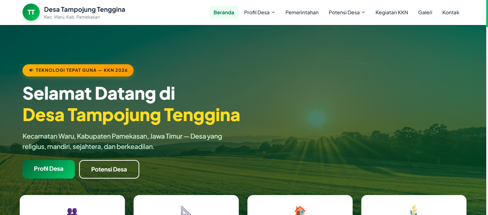
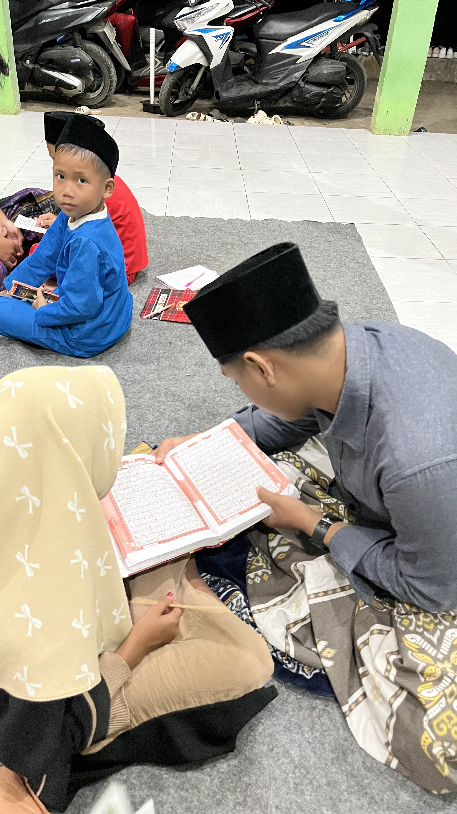
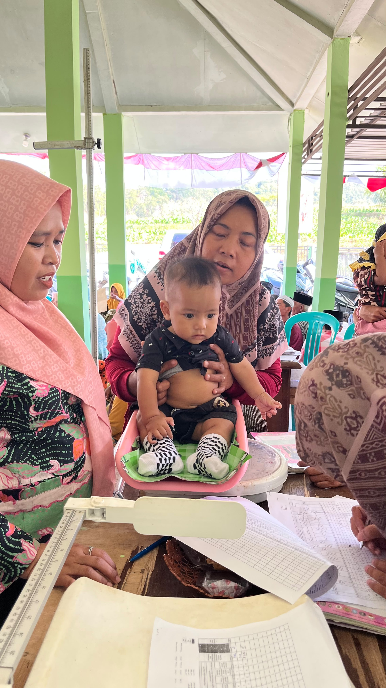
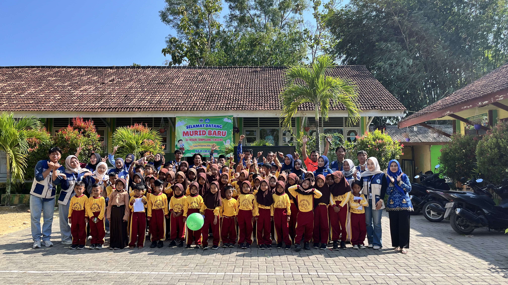
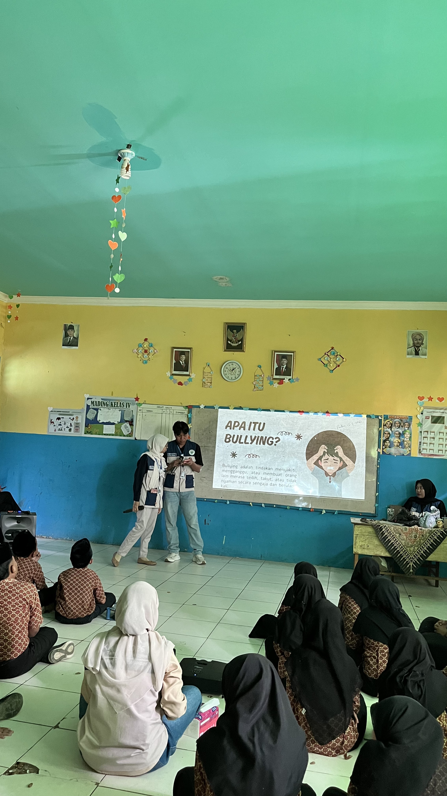
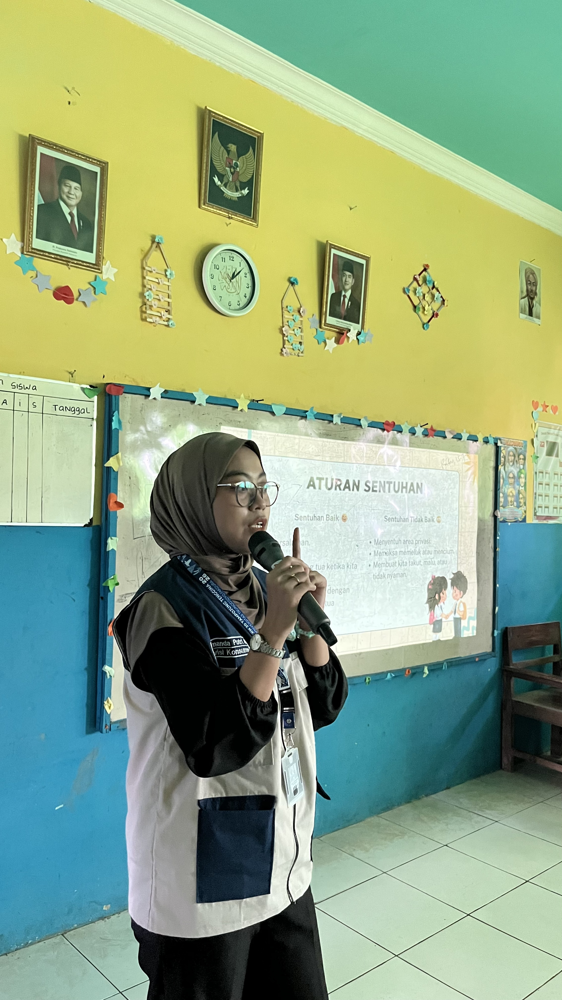

Program Teknologi Tepat Guna
Pelaksanaan Kuliah Kerja Nyata (KKN) tahun 2026 di Desa Tampojung Tenggina difokuskan pada penerapan Teknologi Tepat Guna. Mengingat mayoritas penduduk desa adalah petani dan peternak (khususnya peternak sapi), kami merancang program-program yang dapat membantu meningkatkan efisiensi dan produktivitas masyarakat.
Salah satu luaran utama dari KKN ini adalah pembuatan dan digitalisasi sistem informasi desa melalui website resmi ini. Berikut adalah dokumentasi berbagai kegiatan yang telah kami laksanakan bersama masyarakat desa.
Dokumentasi Kegiatan

Pengembangan Website Desa
Pelatihan pengelolaan dan penyerahan website desa sebagai luaran utama KKN berbasis teknologi tepat guna.

Kerja Bakti Lingkungan
Kegiatan gotong royong membersihkan lingkungan dan fasilitas umum bersama warga desa setempat.

Bimbingan Belajar Mengaji
Pendampingan membaca Al-Qur'an dan penanaman nilai-nilai keagamaan bagi anak-anak usia dini.

Program Mengajar di Sekolah
Pemberdayaan pendidikan melalui bantuan tenaga pengajar untuk berbagai mata pelajaran di sekolah setempat.

Edukasi Pembuatan Pupuk Organik
Sosialisasi dan praktik pembuatan pupuk organik untuk membantu meningkatkan produktivitas panen para petani.

Pemeriksaan Kesehatan Gratis
Kegiatan penyuluhan kesehatan dan pemeriksaan medis gratis yang berkolaborasi dengan petugas Puskesmas setempat.

Sosialisasi Anti-Perundungan di SD
Edukasi pencegahan tindakan perundungan (bullying) guna menciptakan lingkungan belajar yang aman di Sekolah Dasar.

Sosialisasi Anti-Perundungan di MI
Kampanye pencegahan perundungan yang diselenggarakan khusus untuk siswa-siswi Madrasah Ibtidaiyah.

Edukasi Batasan Privasi Tubuh
Penyuluhan pentingnya memahami dan menjaga area privasi tubuh sejak dini bagi siswa-siswi Madrasah Ibtidaiyah.

Penyuluhan Bahaya Narkoba
Sosialisasi pencegahan penyalahgunaan narkotika dan obat-obatan terlarang bagi pelajar tingkat Sekolah Menengah Pertama.
Seluruh dokumentasi kegiatan KKN di atas telah diperbarui dengan foto asli.